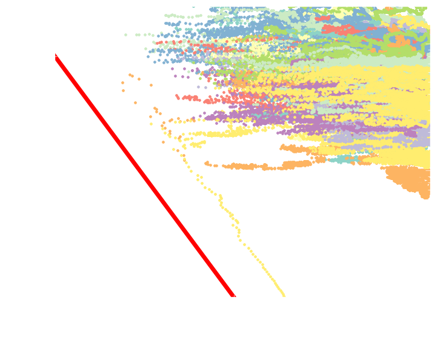

Stellar Dynamics around a Massive Black Hole
Ben Bar-Or and Tal Alexander
Weizmann Institute of Science
The Galactic center is a rich environment
- Extremely dense stellar system
- We can observe individual stars
- Observations indicate a Massive Black Hole \(M=4\times10^{6}M_{\mathrm{sun}}\)
- A “lab” for testing general relativity
- Most of the stellar objects are unobservable
- Opportunity for studying statistical physics of a stellar system

Schödel et al. (2007)
The S-stars cluster
Tidal disruption

Extreme mass ratio inspiral
 Steve Drasco & Curt Cutler
Steve Drasco & Curt Cutler
\(N\)-body simulation (\(N=10^4\, t = 10^5 \mathrm{yr}\))
Bar-Or et al. (2013)
Statistical mechanics of stellar systems is challenging
Commonly used Approximations:
- Local interactions
- Instantaneous interactions: Markovian (uncorrelated) process
- Weak encounters: central limit
Description by a Fokker-Planck (diffusion) equation:
- Random walk in velocities (energy and angular momentum)
- Slow relaxation \(t_{\mathrm{relax}} \sim 10^{10}\,\mathrm{yr}\)
\(2\)-body encounter
\[\frac{\partial}{\partial t}f\left(E,t\right)=\frac{1}{2}\frac{\partial^{2}}{\partial E^{2}}\left[D_{2}\left(E\right)f\left(E,t\right)\right]-\frac{\partial}{\partial x}\left[D_{1}\left(E\right)f\left(E,t\right)\right] \]
Long-time correlations are important
Resonant Relaxation (Rauch & Tremaine 1996):
- Stochastic residual torques \(\dot{J} \propto\sqrt{N}\)
- Short timescales (\(P < t < T_\mathrm{coh}\)):
angular momentum changes coherently - Longer timescales (\(t > T_\mathrm{coh}\)):
random walk in angular momentum - Relaxation can be fast: \(T_{RR} \ll T_{\mathrm{relax}}\)
\(N\)-body simulation (\(N=10^4\, t = 10^5 \mathrm{yr}\))
Bar-Or et al. (2013)
\(N\)-body simulation (\(N=10^4\, t = 10^5 \mathrm{yr}\))
Bar-Or et al. (2013)
Key question: How to describe
resonant relaxation?
Challenges:
- Long range interactions
- Long time correlations
- Multiple timescales: correlated process
Description by a diffusion equation?
The Stochastic approach
- Stochastic Equations of motion: \[\dot{\boldsymbol{J}}=-\tau_N(J)\hat{e}_\psi(\phi,\theta,\psi)\times\color{yellow}{\boldsymbol{\eta}(t)}\]
- Markovian approximation - uncorrelated noise: \[\left\langle \eta_{i}(t)\eta_j(t^\prime)\right\rangle =\delta_{ij}\delta((t-t^\prime)/T_\mathrm{coh})\]

\(N\)-ring simulation
Resonant relaxation can be
extremely efficient
- Random walk in phase space
- Much faster than \(2\)-body relaxation
- All stars will plunge into the massive black hole
- General relativity is not included
Monte Carlo simulations: \(2\)-body only
Bar-Or and Alexander (2015)
Monte Carlo simulations: with resonant relaxation
Bar-Or and Alexander (2015)
Relativistic stars precess fast
- Precession frequency diverges with eccentricity \[\color{yellow}{\nu_{GR}(j)}=3\frac{J_c^2}{J^{2}}\frac{r_{g}}{a}\nu_{r}\left(a\right)\]
S2

Ghez et al. (2008), Gillessen et al. (2009)
\[T_{GR}\approx2\times10^{3}P\]
General relativistic effects restrict the relaxation
- Restricted random walk in phase space
- Protection against direct plunges
- Emission of gravitational waves

Post-Newtonian \(N\)-body simulation (\(N=50\))
Kupi and Alexander (2012)
Key question: How to describe
resonant relaxation?
Challenges:
- Long range interactions ✔
- Long time correlations
- Multiple timescales: correlated process
- Non-relativistic orbits: \(2\pi/\nu_{GR} \gg T_\mathrm{coh}\)
- Relativistic orbits: \(2\pi/\nu_{GR} \ll T_\mathrm{coh}\)
Description by a diffusion equation?
- Yes! resonant relaxation can be describe by an effective Fokker-Planck equation for a general correlated noise
Stochastic equations of motion with correlated noise
- Stochastic Equations of motion: \[\dot{\boldsymbol{J}}=-\tau_N(J)\hat{e}_\psi(\phi,\theta,\psi)\times\color{yellow}{\boldsymbol{\eta}(t)}\]
- Correlated noise: \[\left\langle \eta_{i}(t)\eta_j(t^\prime)\right\rangle =\delta_{ij}C((t-t^\prime)/T_\mathrm{coh})\]
Noise models
Power spectrum
Bar-Or and Alexander (2014)
Resonant relaxation can be describe by an effective diffusion equation
- Effective Fokker-Planck (diffusion) equation
- Noise dependent diffusion coefficient: \[ D_2(j) \propto\color{yellow}{{S_\eta}{\color{yellow}(\nu_{GR}(j))}}\] Proportional to the spectral power of the noise at the precession frequency.
- GR Precession frequency diverges with eccentricity \[\color{yellow}{\nu_{GR}(j)}\propto 1/J^{2}\]
Power spectrum

Bar-Or and Alexander (2014)
- Adiabatic invariance \(\nu_{GR} =
2\pi/T_{\mathrm{coh}}\)
The time evolution depends on the noise properties
- Good match between the stochastic equation of motion (circles) and the effective Fokker-plank (lines)
- Smooth (Gaussian) noise results in adiabatic invariance
- Non-smooth (Exponential) noise allows angular momentum to evolve to \(J\to0\) (plunge into the MBH)

Bar-Or and Alexander (2014)

Bar-Or and Alexander (2014)
Bar-Or and Alexander (2014)
Bar-Or and Alexander (2014)
Bar-Or and Alexander (2014)

Bar-Or and Alexander (2014)

Bar-Or and Alexander (2014)
Resonant relaxation is efficiently quenched by GR precession
Analytic model
Bar-Or and Alexander (2015)
- Inspiral rate: \(1.5\times10^{-6}\,\mathrm{yr}^{-1}\)
Monte-Carlo simulation
Bar-Or and Alexander (2015)
Summary
- Statistical mechanics framework for resonant relaxation
- Representation of the background as correlated noise
- Derivation of an effective diffusion equation for a general correlated noise
- Due to general relativity, stellar black holes can inspiral into the massive black hole while emitting gravitational waves